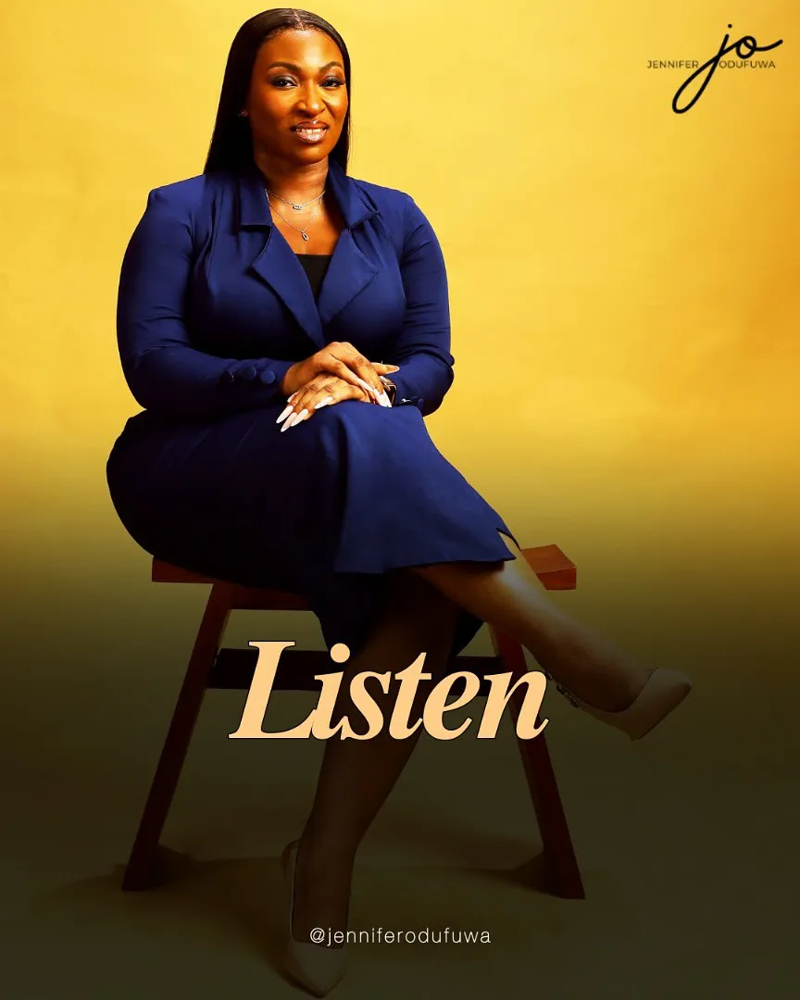
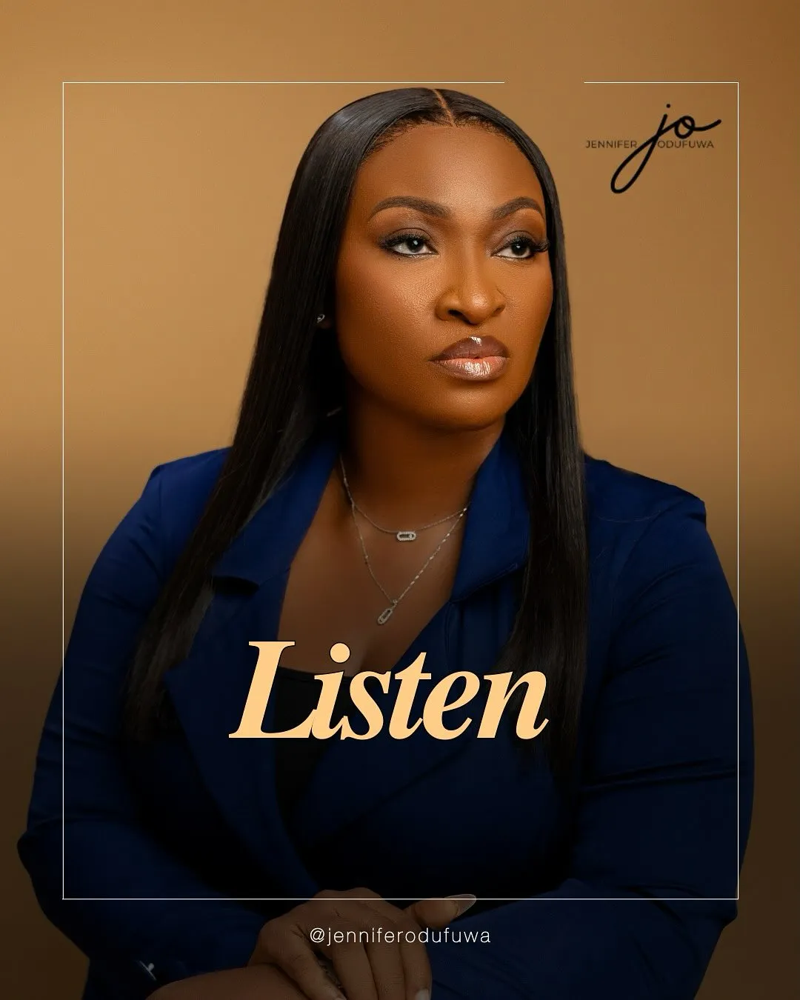
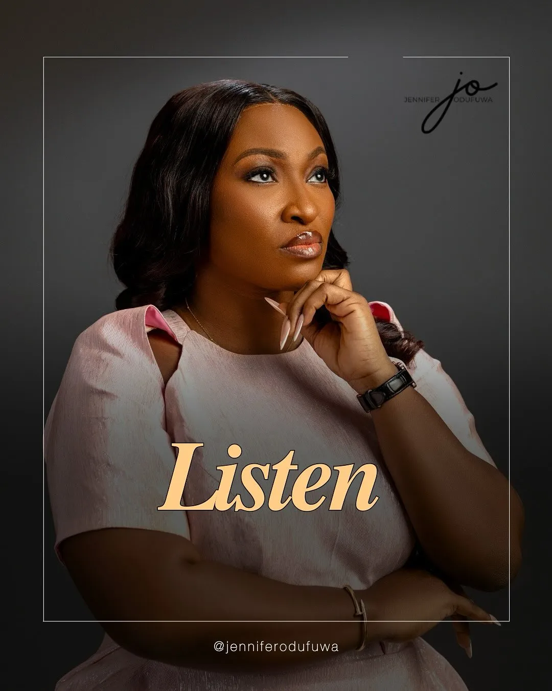

Jennifer Odufuwa: From Ruin to Radiance
Some stories are carved from glass, fragile, precious, luminous when struck by light. Jennifer Odufuwa’s story is one such masterpiece of reinvention. Her life didn’t just crack, it shattered. A cascade of personal and professional collapse stripped away her business, her finances, her identity, and with it, the voice of self has never felt more lost.
But here’s where metamorphosis blooms. Where most see ruin, Jennifer sowed a garden of purpose. It began in stillness, not as a business pitch, but as a lifeline. Out of that quiet breaking was born Thrive Beyond Foundation, a women-focused nonprofit rooted in emotional healing, business recovery, digital empowerment, and holistic wellness.
Thrive Beyond: A Lighthouse for 10,000 Dreamers
Let’s whisper truths that ring louder than any scoreboard. Thrive Beyond has touched over 10,000 women, offering deep, quiet transformation rather than flamboyant displays. Twenty-two of those women have already been provided with direct support to restart their lives, stories of recovery stitched with strategy and soul.
What’s her secret? It’s a single, searing question: “What’s in your hands?” Not to measure what’s lost, but to honor what remains. Skills, voice, experience, perhaps faith still flickering despite the storm. This question became Jennifer’s blueprint for healing, and now, it’s the rallying cry for every woman who crosses her path.

More Than One Crown: The Many Realms of Her Kingdom
Jennifer doesn’t stop at empowerment, she choreographs ecosystems of creativity, impact, and narrative.
At Tantacom, she co-leads a Lagos-based experiential marketing and events agency focused on immersive, impact-driven brand campaigns.
With the Culinara Group, she is building a culinary innovation ecosystem, birthing projects like Eko Flavours (national cooking competition), Kitchen Konnect (food and business summit), Culinara Academy (chefs in training), and Culinara Media (culinary storytelling).
The Bloom Company, her other venture, curates intentional gifting and wellness experiences, because care, like a flower, blooms best when done with purpose.
Yet, for all her ventures, Thrive Beyond remains the most personal, a phoenix born from her own silent season, now setting others on fire with purpose.
A Symphony of Renewal
This is no wind-tossed spectacle, it’s a symphony of healing. For every woman who thought her narrative ended at loss, Jennifer says, “You’re not behind, you’re becoming.” You’re allowed to be both a masterpiece and a work in progress. That powerful truth is the heart of her message, and the soul of her legacy.
The Art and Science of Her Impact
Let’s pause for the statistics. They whisper, they’re soft, yet undeniable.
| Impact Area | Measurable Reach |
|---|---|
| Women Reached | Over 10,000 |
| Direct Support Cases | 22+ |
| Focus Areas | Emotional healing, Digital empowerment, Business training, Holistic wellness |
She didn’t just hand people a lifeboat. She asked them where their oars are and taught them to row.
To You, Fellow Storytaker

Here’s where you step in. Celebrate Jennifer now, while you can still smell the roses. Praise her resilience not as a rare anomaly, but as a template for how ordinary lives make extraordinary chapters. She is not a unicorn, she is well-stamped proof that when life breaks you open, beauty and purpose can flow out.
Jennifer Odufuwa stands tall on a pedestal not built from so-called perfection but from the dust of rediscovered purpose. Let Spotlite Africa sing her praises, for she transformed personal loss into platforms of empowerment, with grace, grit, and that artful whisper of hope.